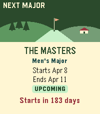

Leaderboards
Positions, total score, today's round and holes played, refreshed every 60 seconds while live.
Follow live professional golf tournaments, leaderboards and player scorecards right from your wrist. ⛳
Built for quick tournament checks without constantly reaching for your phone.

Pebble Time 2 — real app screenshot
Positions, total score, today's round and holes played, refreshed every 60 seconds while live.
Round summaries plus front-nine and back-nine hole-by-hole scoring.
PGA Tour, LPGA Tour, majors, upcoming events and historical results in a compact Pebble UI.
Live event snapshots and upcoming tournament pins ready on your Pebble Timeline.
Built for Pebble
Every core action works with physical buttons. Time 2 and Round 2 add quick taps and swipes for lists and scorecards.
Made because I wanted it
Pebble Golf Live started as a simple way to glance at tournament scores from my wrist. It grew into a compact golf companion for live events, schedules and player scoring.
Found a bug, spotted wrong tournament data, or have an idea? Post it on GitHub Issues.
Pebble Golf Live is an independent app. Created By: N3evin